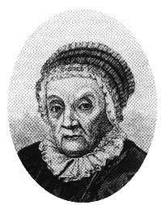

|
  |
  |
 |
Carolina Lucretia Hershell |

– Alemana -1750 -1848
“Donde están tus riquezas, también estará tu corazón” Mateo 6,21.

La primera mujer astrónomo de la historia. Nacida en 1750 en la ciudad alemana de Hannover, recibió de su padre una educación que la hizo interesar por la música y las ciencias, lo mismo que a sus demás hermanos.
Carolina fue llamada en 1772 de su natal Alemania por Guillermo Herschel, que estaba en Inglaterra, tenía 22 años y formaron un buen equipo, ella tenía una enorme admiración por su hermano, lo siguió en todo, en la pasión que ambos le profesaron a la música, en las observaciones de las estrellas, a partir de entonces Carolina se apasionó por el estudio del cielo, y se encargaba de los cálculos matemáticos, además de recibía de él lecciones de canto, matemáticas, álgebra, ingles, trigonometría y astronomía.
La falta de dinero, hizo que ambos se ganaran la vida calibrando cristales para la construcción de los mejores telescopios de Europa y pulían las lentes de los nuevos telescopios que construían.
También fue una excelente docente, cuando su hermano fue nombrado astrónomo real de Jorge III Carolina enseñó a las hijas del rey las últimas teorías sobre la conformación del Universo, incluída la idea que ella y su hermano habían desarrollado sobre los “universos islas”.
Al terminar ella se dedicaba a sus propias observaciones, incansablemente en su trabajo y adquiriendo con el tiempo una práctica tal que hizo de ella una astrónoma muy autorizada, teniendo mucho que ver en el descubrimiento del planeta Urano en 1781 realizado por su hermano William a los 36 años el 1 de agosto de 1786 descubrió su primer cometa, gracias a ello, al año siguiente, el Rey Jorge III le dio un sueldo de 50 Libras como ayudante oficial de su hermano William -que cobraba 200 Libras.
En total descubrió ocho cometas y doce nebulosas, a los 47 años se dedicó a revisar y ordenar el catálogo de observaciones de estrellas fijas de Flamsteed, publicó y agregó 560 estrellas que el astrónomo había omitido.
En 1822, a sus 72 años, fue a Hannover para recibir la medalla de oro de astronomía
gracias a sus trabajos y catalogación de 2 500 objetos del cielo profundo.
A los 78 años, recibió la medalla de oro de la Royal Astronomical Society de Inglaterra.
Y cuando ya tenía 85 años, fue nombrada, junto con la matemático y astrónomo Mary Somerville, miembro honorario de dicha asociación fueron las dos primeras mujeres que recibían tal distinción.
El hecho de hacerlas miembros honorarios, fue que los estatutos impedían hacer miembro de número a las mujeres.
Carolina perteneció a una reconocida familia de Astrónomos, su hermano William fue quien descubrió el planeta Urano, en el mundo científico era una celebridad, y por su casa pasaban los personajes científicos más eminentes, tales como Gauss.
Muere a la edad de 98 años.